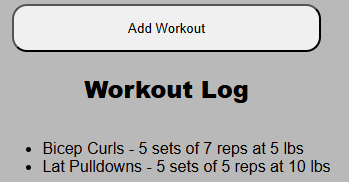

Choosing your workout
On the home page, choose a workout based on the muscle you want to target.
Logging your workout
Date

After selecting your target muscles, enter today's date.
Exercise
This is where you choose your exercise. Open the dropdown menu to select one. If the exercise you have planned is not listed, you can manually type it into the field below the dropdown. After you fill in the remaining fields and click the 'Add Workout' button, your manually entered exercise will be added to the dropdown menu for easy access next time.
Weight
Enter how much weight you will be lifting. After you fill in the remaining fields and click the 'Add Workout' button, your weight will be recorded and displayed in lbs. If you have changed your language settings to "Japanese", your weight will be recorded and displayed in kg instead.

Sets
Enter the number of sets you plan to complete for this exercise.

Reps
Enter the number of repetitions (reps) you will perform for each set.
Add Workout Button and Workout History
Once the 'Add Workout' button is pressed, your exercise information will be shown below. Repeat this process for each exercise done, and your entire workout is logged. Click the "Workout History" button to view all your past workouts sorted by date.